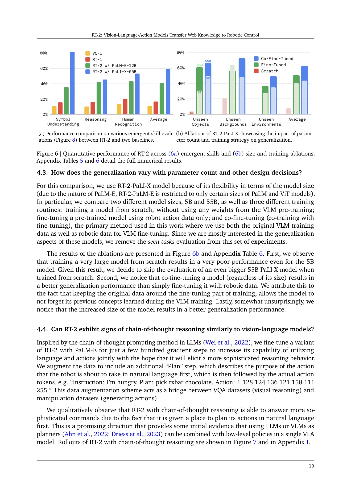
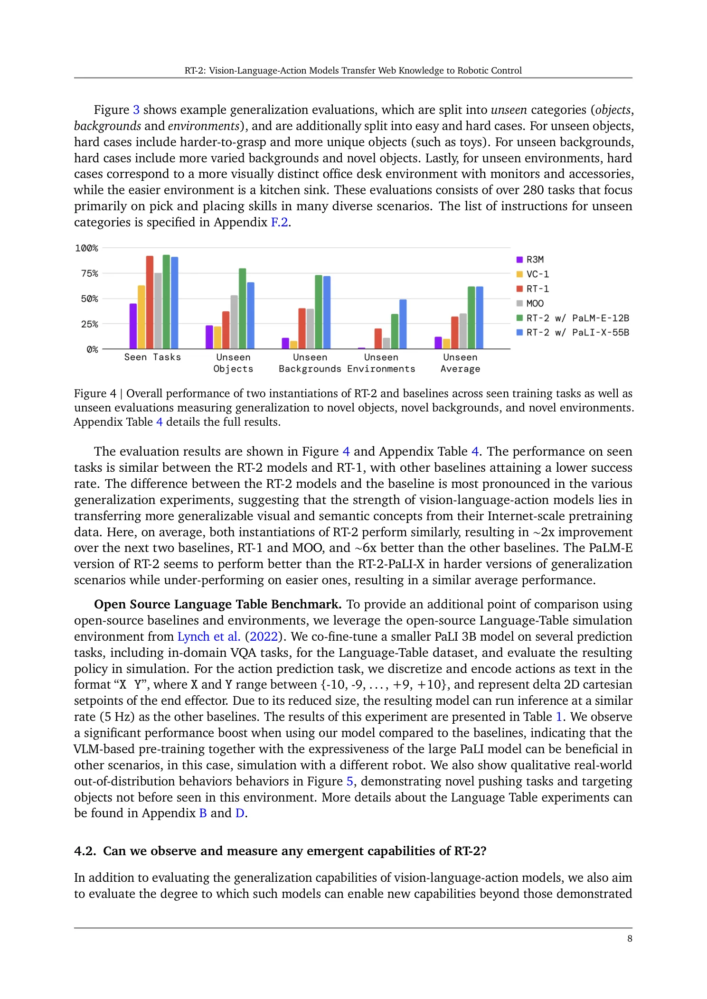
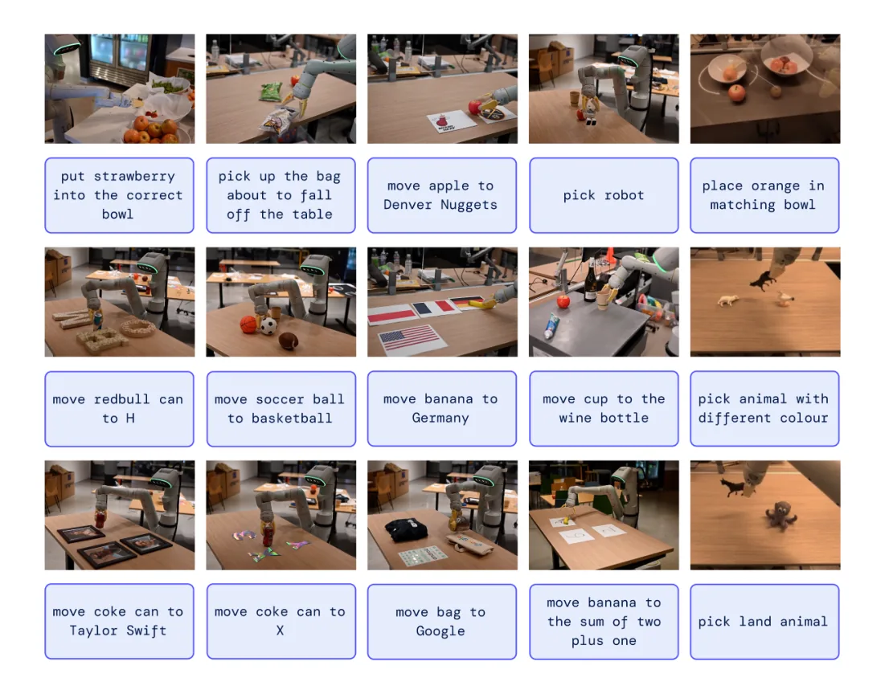
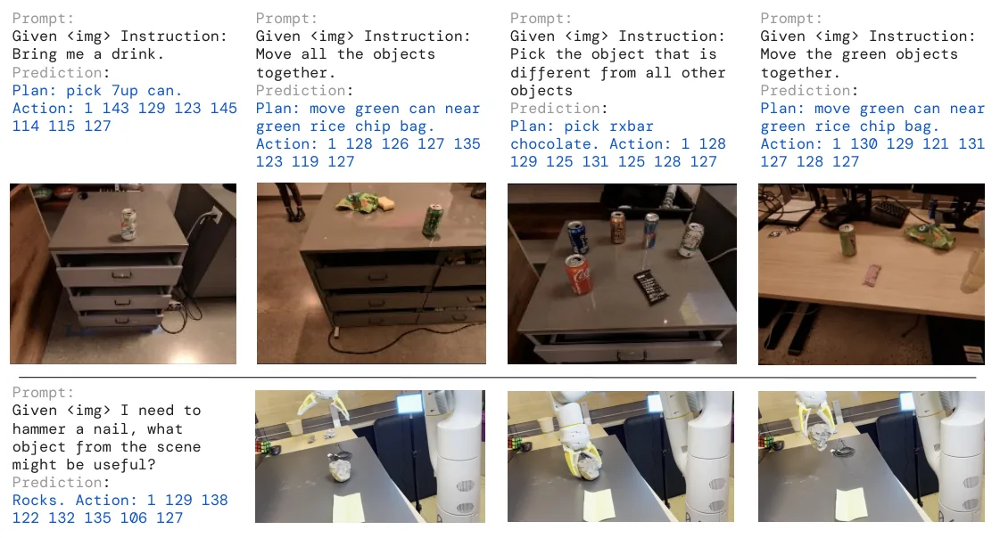

💡速记层 · 思想 / 逻辑 / 方法
默认读完就走的一层——只讲思想、逻辑、方法；效果只作验证。要核对原文/钻细节再看下面的「深读层」。
- VLM 在网页数据（文本+图像）上学到了丰富的语义/推理/常识，但输出的是语言 token，不是机器人动作。
- 机器人动作（6-DoF 末端执行器位移 + 抓手）可以被均匀离散成整数 bin，并用与语言完全相同的 token 表示——action-as-text-tokens。
- 统一 token 格式后，机器人轨迹和网页 VQA 数据可以混在同一训练集里，进行co-fine-tuning——不引入任何新参数。
- co-fine-tuning 同时保留 VLM 的语义知识（不遗忘）并学习机器人动作，而纯 fine-tuning 会遗忘。
- 结果：VLA 模型自动获得 VLM 的涌现能力——符号理解、多语言、数学推理、人物识别——这些能力完全未出现在机器人训练数据中。
"1 128 91 241 5 101 127"，与语言完全同质化。在 6000 次真实机器人评测中：泛化到未见物体/场景 约 2×（vs RT-1/MOO）；涌现能力（符号/推理/人物识别）约 3×（vs RT-1）；co-fine-tuning 显著优于 fine-tuning，55B 优于 5B——三条消融均指向同一结论：迁移的是知识，不是数据量。
想看具体数字（点开）
- RT-2-PaLI-X-55B 未见物体平均成功率 62%，RT-1 仅 32%（Table 4）。
- 涌现能力平均：RT-2-PaLI-X-55B 60%，RT-1 仅 17%（Table 5）。
- co-fine-tuning 5B 均值 42% vs fine-tuning 5B 均值 42%（相近）vs from scratch 9%（崩塌）——主要差距体现在泛化类别上（Table 6）。
- 55B 均值 62% vs 5B 均值 46%（co-fine-tuning）——模型规模单调有效。
- Language-Table 仿真：RT-2-PaLI-3B 90±10 vs RT-1 74±13（Table 1）。
Track A（移动操作 VLA）强命中：RT-2 正是 VLA 范式的奠基性工作，action-as-text-tokens + co-fine-tuning 是后续所有 VLA（OpenVLA、π0、RT-X…）的共同起点。理解 RT-2 是读懂整个 VLA 脉络的必经之路。Track B（足式先进算法）不直接相关——本文不涉及 locomotion 底层控制。
◆核心观点 · 证据
每条 = 中文论点 + 📍页/节 + 🔤逐字原文(Ctrl-F 锚点) + 🀄译文 + 💡解读。
directly applying such models to robotic tasks is also difficult: such models reason about semantics, labels, and textual prompts, whereas robots require grounded low-level actions, such as Cartesian end-effector commands.

we propose to co-fine-tune state-of-the-art vision-language models on both robotic trajectory data and Internet-scale vision-language tasks, such as visual question answering. In contrast to other approaches, we propose a simple, general recipe to achieve this goal: in order to fit both natural language responses and robotic actions into the same format, we express the actions as text tokens and incorporate them directly into the training set of the model in the same way as natural language tokens.
The continuous dimensions (all dimensions except for the discrete termination command) are discretized into 256 bins uniformly. Thus, the robot action can be represented using ordinals of the discrete bins as 8 integer numbers.
we notice that co-fine-tuning leads to more generalizable policies since the policies are exposed to both abstract visual concepts from web scale data and low level robot actions during fine-tuning, instead of just robot actions.
we notice that co-fine-tuning a model (regardless of its size) results in a better generalization performance than simply fine-tuning it with robotic data. We attribute this to the fact that keeping the original data around the fine-tuning part of training, allows the model to not forget its previous concepts learned during the VLM training.


The difference between the RT-2 models and the baseline is most pronounced in the various generalization experiments, suggesting that the strength of vision-language-action models lies in transferring more generalizable visual and semantic concepts from their Internet-scale pretraining data. Here, on average, both instantiations of RT-2 perform similarly, resulting in ∼2x improvement over the next two baselines, RT-1 and MOO, and ∼6x better than the other baselines.

we observe a number of emergent capabilities. While the model's physical skills are still limited to the distribution of skills seen in the robot data, the model acquires the ability to deploy those skills in new ways by interpreting images and language commands using knowledge gleaned from the web.
We observe that our VLA models significantly outperform the baselines across all categories, with our best RT-2-PaLI-X model achieving more than 3x average success rate over the next best baseline (RT-1).

Inspired by the chain-of-thought prompting method in LLMs (Wei et al., 2022), we fine-tune a variant of RT-2 with PaLM-E for just a few hundred gradient steps to increase its capability of utilizing language and actions jointly with the hope that it will elicit a more sophisticated reasoning behavior.
This data augmentation scheme acts as a bridge between VQA datasets (visual reasoning) and manipulation datasets (generating actions).
To the best of our knowledge, our model is the largest ever, by over an order of magnitude, used for direct closed-loop robotic control, and therefore requires a new set of solutions to enable efficient real-time inference.
although we show that including web-scale pretraining via VLMs boosts generalization over semantic and visual concepts, the robot does not acquire any ability to perform new motions by virtue of including this additional experience. The model's physical skills are still limited to the distribution of skills seen in the robot data (see Appendix G), but it learns to deploy those skills in new ways.
⎘开源状态
- 代码
- 未开源 Google DeepMind 内部 TPU 基础设施，无公开代码
- 权重
- 未开源 PaLI-X / PaLM-E 权重均未公开
- 数据
- 未开源 RT-1 机器人数据集（部分已发布于 Open X-Embodiment）
- 项目页
- 仅演示 robotics-transformer2.github.io 提供视频演示和论文
RT-2 由 Google DeepMind 开发，代码、权重、私有机器人数据均未公开。但其思想（action-as-text-tokens + co-fine-tuning）已被社区广泛复现，代表性开源工作包括 OpenVLA（UC Berkeley，基于 Prismatic VLM + Open X-Embodiment 数据）和后续的 π0（Physical Intelligence，已开源 openpi）。
https://robotics-transformer2.github.io
⚖批判 · 评级
RT-2 是VLA 范式的奠基论文：action-as-text-tokens + co-fine-tuning 这个极简方案解决了"VLM 如何变成机器人控制器"的关键问题，且以 6000 次真实评测证明了涌现能力（3×）和泛化（2×）的实质性提升。消融设计清晰，逻辑链完整。后续所有 VLA 工作（OpenVLA、RT-X、π0、OpenPI）都建立在这套范式上——理解 RT-2 是读懂 VLA 领域的前提。
① 完全闭源：代码/权重/私有数据均未公开，社区无法直接复现或在其上构建。② 运动泛化局限：RT-2 不能从网页数据学到新运动技能，只能语义泛化——复杂灵巧操作仍需大量机器人数据。③ 推理速度：55B 模型需 multi-TPU 云服务，1-3 Hz，不适合高频控制场景。④ 评测范围有限：主要在 office kitchen 单一场景，固定臂 7-DoF 操作——移动操作/人形机器人上的泛化未验证。⑤ chain-of-thought 部分仅有定性演示，无定量评测。
评级：Breakthrough VLA 概念的首次大规模实验验证，奠定了整个方向的基础范式，影响力极高。